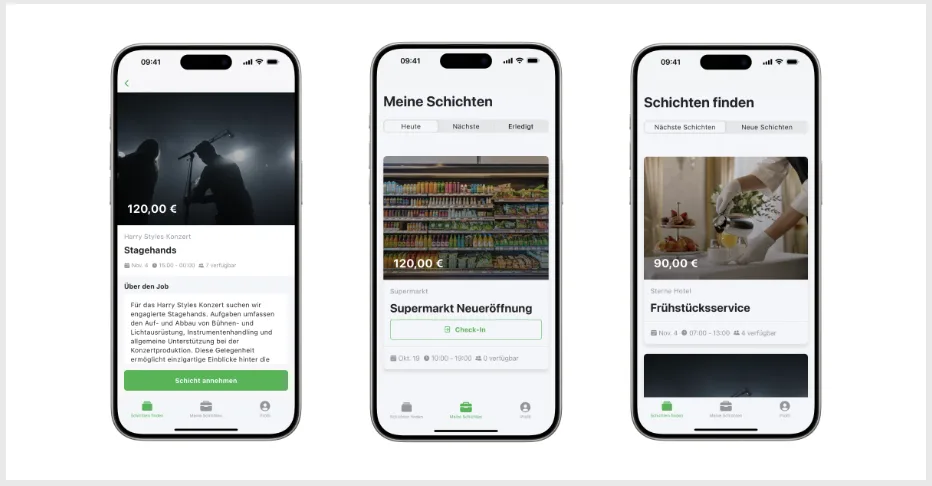

Die uniworks App

München – Als Reaktion auf das rasante Wachstum und den überwältigenden Erfolg seiner Community launcht die uniworks GmbH eine App, die das Finden und Verwalten von Jobs für Studierende noch einfacher gestaltet. Mit der neuen App unterstreicht das Unternehmen sein Engagement, die Arbeitswelt für Studierende nicht nur flexibler, sondern auch intuitiver und zugänglicher zu gestalten.
„Das schnelle Anwachsen unserer Community auf mittlerweile über 250 Studierende ist ein deutliches Zeichen dafür, dass wir mit unserer Idee den Nerv der Zeit treffen“, sagt Moritz, Geschäftsführer von uniworks. „Wir sind begeistert zu sehen, wie unsere Plattform Studierenden hilft, Studium und Job in Einklang zu bringen.“
„Mit der Einführung der uniworks App setzen wir einen weiteren wichtigen Schritt in Richtung Zukunft“, erklärt Emil, der als Interfacedesign-Student den App-Prozess begleitete. „Unsere Vision ist es, die Arbeitswelt für Studierende nicht nur flexibler, sondern auch intuitiver und zugänglicher zu gestalten.“
Die uniworks App bietet mehrere Schlüsselfunktionen, die den Studierenden helfen, ihre Arbeit effizient zu organisieren. Die „Nächste Schichten“-Funktion ermöglicht es Nutzern, schnell freie Arbeitszeiten zu finden und sich dafür einzutragen, wobei die Schichten übersichtlich nach Datum sortiert sind. Die Wartelisten-Funktion informiert die Studierenden sofort, wenn ein Platz in begehrten Schichten frei wird, und mit „Meine Schichten“ können Nutzer ihre Arbeitszeiten direkt in ihren persönlichen Kalender integrieren. Zusätzlich erlaubt die „Zeiten tracken“-Funktion eine genaue Aufzeichnung der Arbeitsstunden, was eine transparente Übersicht über die Verdienste und korrekte Bezahlung sicherstellt.
„Wir freuen uns auf die Zukunft und die weiteren Möglichkeiten, die diese App bietet. Wir laden alle Studierenden ein, die uniworks App im App Store und Play Store herunterzuladen und Teil unserer wachsenden Community zu werden“, so Stefan, Mitgründer von uniworks. „Dies ist erst der Anfang einer spannenden Reise, und wir sind begeistert, diesen Weg gemeinsam mit unseren Nutzerinnen und Nutzern zu gehen.“